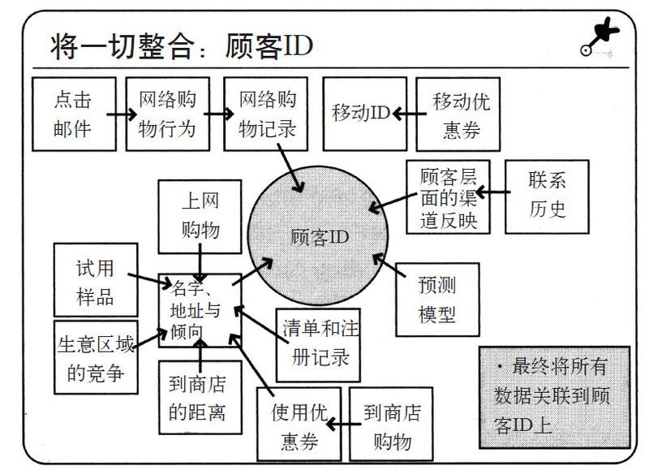
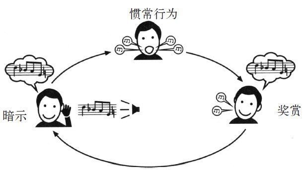
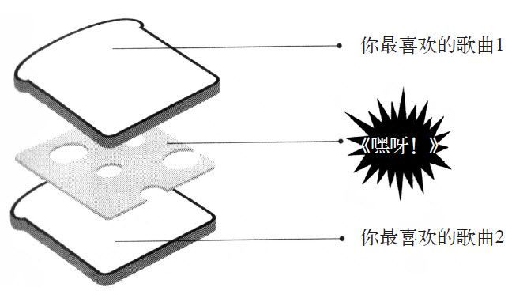

在安德鲁·波尔刚刚成为塔吉特公司的数据专员的时候，有一天，他的几位营销部门的同事驻足在他的办公桌旁，向安德鲁提出了一个注定要由他才能回答的问题。
“你的计算机能不能在顾客刻意隐瞒的情况下，计算出哪些是怀孕的顾客？”
波尔是一名统计员，他的一生都在通过和数据打交道来了解其他人。他在北达科他州的一个小镇中长大，当他的小伙伴们兴致勃勃地参与4-H农场教育计划或制作模型火箭的时候，波尔却常常与计算机为伍。大学毕业后，他先后获得了统计学和经济学学位。他在密苏里大学经济学课堂中的同学纷纷走向保险公司和政府机关的岗位，而波尔有了另一条人生轨迹。他对经济学家们利用图样分析解释人类行为的方法深深着迷。事实上，波尔尝试过一些非正式的实验，他曾经召开过一次聚会，并在聚会上挨个询问在座客人最喜欢的笑话，试着为完美的笑话创建一个数学模型。他还尝试着计算出足以在聚会上激起他和女生搭讪的勇气所需的确切啤酒量，但是在喝到既定数量之前他就应该已经不省人事、出尽洋相了（似乎这项研究就从没得到过正确的结果）。
但他知道，和美国企业如何运用数据观察人们的生活相比，这些实验如同儿戏。波尔想加入其中。所以当他听说一间贺卡公司（贺曼公司）正在堪萨斯城招聘统计员时，他毫不迟疑地报了名。很快他开始在忙碌中度过每天的生活，通过分析销售数据来确定是否有熊猫、大象图片的生日贺卡会卖得更好，以及“我和外婆的秘密”这行字用红笔或蓝笔写是否会更有趣。对波尔来说，公司就如同天堂一般。
6年后，即2002年，波尔获悉塔吉特公司正在寻求统计员后立刻跳了槽。他知道，从数据收集这个角度来说，塔吉特公司与贺曼公司完全不在一个数量级上。每一年，都有数百万名顾客走入塔吉特的1 147间商店，将自己数兆字节的信息移交出来，大部分人甚至都没有意识到这一点。在他们使用客户会员卡、兑换邮件中附带的优惠券或者刷信用卡的同时，塔吉特公司已经将每一位顾客的消费行为连接至个性化的身份档案上，大多数顾客则一无所知。
对于统计员来说，这些数据正是用来窥探顾客消费偏好的神奇之窗。塔吉特公司的经营项目包罗万象，从食品杂货到服装、电子元件甚至户外家具，无所不包。通过密切跟踪顾客的购物习惯，公司的分析师可以轻易预测顾客家中到底在发生什么。有人在买新的毛巾、床单、银餐具、平底锅和速冻食品吗？那么他们不是刚刚迁入新居，就有可能是劳燕分飞了。如果顾客的手推车被驱虫喷雾剂、儿童内衣、手电筒、一堆电池、《简单生活》杂志和一瓶霞多丽白葡萄酒塞得满满当当呢？那就说明，夏令营指日可待，妈妈已经等不及了。
塔吉特公司为波尔提供了在美国消费者聚居地研究这一史上最复杂物种的机会。他的工作就是建立一个能够应付海量数据的数学模型，最终确定哪些家庭有孩子，哪些家庭是清一色的单身汉；哪些消费者酷爱室外运动，哪些消费者更倾向于端着冰激凌欣赏爱情小说。
波尔的任务就是通晓数学读心术，通过破译消费者的购物习惯，来说服他们花更多的钱。
于是在一个下午，波尔在营销部的几名同事驻足在他的办公桌旁。他们说，他们想让波尔分析消费者的消费结构，以确定哪些是怀孕的顾客。毕竟，孕妇和初为人母的妇女大军是零售业的救世主。从利润可观、需求庞大和对价格不敏感几个方面来说，孕妇都让其他的消费人群望尘莫及。她们的消费可不仅仅局限于尿布和湿巾。新生儿的父母通常会因婴儿忙得分身乏术，他们在购买奶瓶和奶粉的同时，常常也会顺手购买他们所需要的一切商品，如果汁、厕纸、袜子和杂志。更重要的是，一旦新生儿的父母在塔吉特买过一次东西，就会在接下来的好几年里成为这里的
常客。
换句话说，找出那些怀孕的顾客，可以为塔吉特带来可观的收入。
波尔的好奇心也被引燃了。数据分析不仅要侵入到消费者的头脑中，还要深入到他们的卧室内。对于一个用数字预测别人生活的人来说，还有什么比这项任务更具挑战性？
但当这项工作完成的时候，波尔可能会接受一些重要的经验教训，即窥视别人最私密的习惯是一件多么危险的事情。例如，他会明白，有时候隐藏所知和有所知同样重要，而且并非所有女人都对那种检查自己生育计划的计算机程序持欢迎态度。
结果显示，并非所有人都认为用数学读取人内心所想是个好主意。
波尔告诉我说：“我猜局外人可能觉得这种做法像是被秘密警察暗中监视，会让一些人感到不舒服。”
以前，像塔吉特这样的公司才不会雇用安德鲁·波尔这样的员工。就在20前年，零售商们是不会进行如此狂热的数据分析的。相反，像杂货店、购物中心、贺卡商、服装零售商和其他大公司一样，塔吉特会采取一种老式的方法窥视消费者的思想，也就是雇用一些兜售含糊的“科学战术”的心理学家来完成这项任务，这些人声称他们掌握着一种能刺激顾客多消费的方法。
其中的一些科学方法到现在仍在使用。如果你走进一家沃尔玛，或家得宝，或当地的其他购物中心仔细观察，你就会发现一些沿用了数十年的销售技巧，每一样技巧都旨在利用你的购物潜意识。
拿我们购买食物的情况来说。
当你进入商店，首先映入眼帘的就是堆成小山般的、整体造型别致的各种水果和蔬菜。
但如果你仔细想想，就会发现在店入口摆放这样的商品并没有太大的意义，因为水果和蔬菜很容易在购物车底部被碰伤；逻辑上来说，这些商品应该摆放在收银台边。但营销人员和心理学家早在很久以前就明白：如果在购物狂欢伊始我们挑选了有利于健康的商品，那么之后当我们看到多力多滋、奥利奥和速冻比萨饼时，就会倾向于购买这些来犒劳自己。购买南瓜的行为在潜意识中激发出的公平感，会促使顾客随后将一品脱冰激凌扔入购物车。
或者，从我们大多数人进入商店后向右转的习惯说起。（你意识到自己会首先向右转吗？但是你几乎每次都是这么做的。数千小时的视频录像可以证明，购物者进入商场之后通常都会直接右转。）这种倾向造成的结果就是，零售商们会将那些最赚钱的商品安排在商场的右侧，以便顾客能够迅速发现并消费。或者我们再以麦片和汤为例：如果发现商品并非按照名称的字母顺序，而是随机排列的时候，顾客会本能地在货架旁徘徊更长的时间，进行更加充分的考虑。所以你基本不会看到葡萄干早餐脆片和赖斯切克斯麦片摆在一起。
因此，你会搜索整个货架以寻找自己想要的麦片，甚至会产生多拿一包其他品牌产品的冲动。
然而，这些促销术都存在着一个问题，即他们对于所有消费者的完全无差别对待。这些用来触发购买习惯的手段是一成不变的，而且相当原始。
然而，在过去的20年中，由于零售市场的竞争日趋激烈，一些连锁店（如塔吉特）开始意识到仅仅依赖那些老把戏是远远不够的。增加销售利润的不二法门是弄清楚每一位消费者的购物习惯，然后再面对一个又一个的消费者进行营销，以个性化服务满足消费者独特的购物偏好。
从某种程度上说，商家的这种认识来源于“消费习惯对于购物决策具有重要影响”这一意识的不断增强。一系列的实验成果使营销人员最终确信，只要他们能够了解消费者特定的购物习惯，就能引导消费者去购买任何商品。在一项研究中，研究人员对进入商场购物的消费者进行了录音，他们想知道消费者是如何做出购买决定的。他们还特别找了那些携带购物清单的消费者，从理论上说，这些消费者在购物之前就确定了自己想要买什么。
研究人员随即发现，除了购物单上的商品之外，超过50%的购物决策都是在顾客看到货架上的商品时产生的。原因在于，除去消费者最优的购买意图，他们的消费习惯明显强于他们的书面意向。一位顾客走进一家商场，喃喃自语道：“让我看看，这里有薯片，这次先不买了。等等，乐事薯片在打折！”他取下一包乐事薯片放入购物车。即便有些消费者极力否认自己对某种商品有所偏好，但他们还是会月复一月地购买相同的品牌。（“我并不是福尔吉咖啡的忠实拥趸，但我只能买这个，你知道吗，那里也没有别的品牌。”一位女士站在陈列着数十种其他咖啡品牌的货架前面如是说。）即便消费者购物前承诺削减花销，但他们每一次购买的食物数量会和平时大抵相同。
2009年，南加州大学的两位心理学家写道：“有时候，顾客就像是一种被消费习惯支配的生物，他们会自动重复过去的行为，很少考虑到当前的目标。”
然而，这些研究令人吃惊的方面在于，即便每个人都依赖习惯来支配消费，每个人的习惯也是不同的。那个喜欢吃薯片的家伙每次都会买上一大包，但喜欢喝福尔吉咖啡的女士绝不会往摆放薯片的过道走上一步。世界上有不管家中剩多少存货都会在每次购物时买牛奶的人，也有不顾减肥计划每次都购买甜点的人，但牛奶买家和甜品沉迷者通常不重合。
购物习惯是因人而异的。
塔吉特希望能够有效利用顾客的这些消费习惯。但每天有数百万人在商店中来来往往，又该如何记录每位客人的消费偏好或模式呢？
你只能收集数据——几乎无法想象的海量数据。
10年前，塔吉特公司就开始建立一个庞大的数据库，为每一位顾客分配识别码，即公司内部所称的“客户ID号”，对每一位顾客的购物方式进行记录。每当顾客使用塔吉特公司发行的信用卡，在收银台使用会员卡，使用寄到家里的优惠券，参与调查，邮寄退款，拨打客服热线，打开一封从塔吉特寄过来的电子邮件，访问Target.com以及在线购物时，公司的计算机都会做出记录。每一笔购买记录和消费者之前所有的购物信息都会链接到客户ID号上。
同样链接到客户ID号上的还有塔吉特所收集的或者向其他公司购买的顾客个人信息，包括顾客的年龄、婚否、是否有孩子、住宅区域、开车去商店所需时间、对顾客收入的估计、最近是否搬过家、浏览过哪些网站、钱包中携带的信用卡，以及他们家庭电话和移动电话号码。塔吉特公司可以购买到消费者的购物数据，其中包括消费者的种族，就业史，他们读什么杂志，是否曾经宣布破产过，他们购买（或变卖）房产的时间，在哪里上的大学或研究生，以及他们是否喜欢某种品牌的咖啡、厕纸、麦片或苹果酱。
有一些兜售数据的小公司，如无线图表公司负责“监听”顾客在网络留言板和论坛的对话，并跟踪顾客对于产品的偏好。一个名叫Rapleaf的数据采集公司专门销售消费者信息，如消费者的政治倾向、阅读习惯、慈善捐赠、拥有的汽车数量，以及他们到底是对宗教新闻还是香烟交易更感兴趣。其他的公司则通过分析消费者在网上发布的照片，按照顾客的胖瘦、高矮、头发的疏密进行编目，最终判断顾客需要购买的商品。（在一份声明中，塔吉特公司拒绝透露与其合作的人口信息调查公司，也拒绝说明这间公司研究的信息种类。）
汤姆·达文波特主要研究企业是如何运用数据进行分析的，在同行中算是领军人物。他说：“在过去，企业只了解那些客户允许了解的信息，不过这已经是很久以前的事情了。如果你们了解到外面兜售的那些数据的价格，肯定会吓一跳。但是每个企业还是会心甘情愿地掏钱，因为这是它们唯一的生存之道。”
如果你在每周的一个工作日下午6点30分用塔吉特信用卡购买一箱冰棒，每逢7月和10月还要购买大型的垃圾袋，塔吉特的统计员和计算机就会认定你养了几个孩子，在下班回家途中倾向于到商店转转，每逢夏天要修整家里的草坪，秋天还要打理落叶。
它在考察了你其他的购物模式后会注意到，你有时候会买麦片，但是从来不买牛奶，这就意味着你肯定在其他的地方买过了。因此，塔吉特公司会邮寄给你九八折的牛奶优惠券，以及巧克力屑、学习用品、户外家具和耙子的优惠券。甚至考虑到你在忙碌一天后可能想要放松一下自己，它还会寄给你啤酒的优惠券。塔吉特公司会猜测你的购物习惯，然后说服你在塔吉特的店中消费。
这间企业可以设定个性化的广告和优惠券，并将其分别寄给每一位顾客。你甚至永远不会知道你和你邻居的信箱收到了不同的促销传单。
在2010年的一次会议上，波尔向一位做零售统计的观众解释道：“通过客户ID号码，我们就能知道你的姓名、住址和购买倾向，知道你是否拥有塔吉特的Visa卡或借记卡，然后我们就可以将这些信息链接到你的消费记录上。”塔吉特公司可以将特定顾客的一半店内消费记录、几乎所有的网上消费记录和1/4的网上浏览记录连接起来。
在会上，波尔用幻灯片的形式演示了塔吉特公司收集的数据样本。当一副图表出现在屏幕上时，观众中有人不解地吹响了口哨。

这些数据面临的问题是，如果缺少统计员的解读，它们将毫无意义。在一个外行人眼里，两名同时购买橙汁的顾客没有什么区别。只有某些特定的统计员才能分辨出，那位34岁的女士是为孩子购买果汁的（因此她才可能会对《小火车托马斯》的DVD优惠券感兴趣），而那位28岁的单身汉购买果汁是为了在跑步运动之后解渴（因此他会对打折运动鞋感兴趣）。
波尔和其他50名来自塔吉特公司客户数据和分析服务部的分析员正是善于发现隐藏在事实之下的购物习惯的专家。
波尔告诉我：“我们将这种分析称为‘为客人画像’，我们对某位顾客了解得越多，就越能猜测出他的购买模式。我不会每次都去猜测你的一举一动，但是我猜对比猜错的次数多。”
在2002年波尔加入塔吉特公司的时候，分析部门已经建立起了一套计算机系统。这套系统可以识别出那些拥有儿童的家庭，并在每年11月向家长们发送自行车和滑板车的商品目录，为家长们挑选圣诞礼物提供选择；每年9月份，系统会发送学校用品的优惠券；以此类推，在每年6月又会打出泳池玩具的销售广告。计算机会寻找那些在4月份购买比基尼泳衣的顾客，并分别在7月份和12月份向这些顾客发放防晒霜和减肥书籍的优惠券。如果愿意，塔吉特公司可以为每一位消费者发送一份装满折扣商品优惠券的购物手册，并且确信消费者会购买其中的商品，因为他们之前就已经购买过这些商品。
在预测顾客购物习惯方面，塔吉特公司并非独树一帜。几乎所有的大型零售商，如亚马逊、百思买、克罗格超市、1-800-鲜花、橄榄园、安海斯布希、美国邮政服务、富达投资、惠普、美国银行、第一资本金融公司，以及数以百计的其他大型企业，都设有这种“预测分析”部门，致力于摸清消费者的偏好。
“但是，塔吉特公司在这方面做得最好。”主持“预测分析世界会议”的埃里克·西格尔说道，“单纯的数据并不能说明什么。塔吉特公司才找到了问题的关键。”
要弄清楚买麦片的人也会买牛奶并不需要聪明才智，但有一些比其他更难的更能为企业带来利润的问题，则需要智慧才能解答。
这就是波尔被塔吉特录用几周后，他的同事询问他是否能在顾客极力隐瞒的情况下获悉哪位顾客怀孕的原因。
1984年，加州大学洛杉矶分校的客座教授艾伦·安德里森发表了一篇论文，以回答一个基本问题：为什么顾客会突然改变他们常规的购物习惯？
安德里森的团队已经花了一年的时间对洛杉矶附近的消费者进行电话调查，询问他们最近的购物行程。每当有人接听电话的时候，科学家们就会接二连三地抛出一系列问题，例如他们购买了什么牌子的牙膏和肥皂，以及他们的购物偏好是否有所转移。合计下来，他们总共通过电话调查了差不多300人。和其他研究人员相同，他们发现大多数人一周接一周地购买相同品牌的麦片和除臭剂。真是习惯至上。
但有时也有例外。
比如，参与安德里森调查的消费者中，有10.5%的人在过去的6个月内更换了牙膏的品牌，超过15%的人开始购买一种新的洗涤剂。安德里森想知道为什么这些人偏离了自己惯有的购物模式。
安德里森的发现已经成为了现代市场营销理论的支柱：当消费者遭遇到人生的重大事件时，他们的消费习惯更容易发生改变。例如，当一个人结婚的时候，他可能会开始购买一种新的咖啡。当他们迁居到新住所后，可能倾向于购买不同种类的麦片。当他们离婚的时候，很可能会开始购买一种不同牌子的啤酒。
但是经历人生重大事件的消费者从未注意到，或根本不关心他们的购物模式是否已经发生变化。然而零售商们不仅注意到了，而且还颇为关心。
“搬迁、结婚或离婚、失业或易职、家庭中的成员变动，”安德里森写道“这些生活当中的变化会使消费者更容易受到市场营销者的干预和左右。”
那么对于大多数人来说，生活中最大的变化是什么呢？什么样的变化会带来最强的干扰，令消费者“更容易受到市场营销者的左右”呢？答案就是生孩子。对于大多数的客户来说，没有什么事情能比新生儿的到来使生活产生更大的改变了。因此与成年生活的其他任何阶段相比，初为父母者的购物习惯都更为灵活易变。
对于各企业来说，孕妇无异于一座座的金矿。初为父母者会购买一大堆商品，如尿布、湿巾、童床、童装、毛毯和奶瓶，而这些商品可以为塔吉特这样的商家带来十分可观的利润。在2010年进行的一项调查估计，在婴儿一岁生日以前，父母的平均花费为6 800美元。
但这只是冰山一角。商店可以抓住初为父母者改变消费习惯的契机创造巨额利润，父母们最初的那些花费与此相比不过是九牛一毛。如果被孩子搞得筋疲力尽的母亲和长期缺觉的父亲开始在塔吉特购买奶粉和尿布，那么他们就会在这里同时购买其他商品：食品、清洁用品、毛巾、内裤等，没有止境。因为这样很方便，对新父母来说，方便才是最重要的。
波尔告诉我说：“只要能争取他们在我们这里购买尿布，他们就会源源不断地到我们这里购买其他商品。如果你急匆匆地跑到商店买奶瓶，通过橙汁通道的时候可能就会拿上一盒。哦，还有我想买的最新的DVD。很快你还会买我们的麦片和纸巾，而且你会常来。”
即使产品中不包括婴儿用品，零售商们也愿意不遗余力地寻找初为父母的消费者，因为他们实在是太宝贵了，就算为此翻遍产房都在所不惜。例如，在纽约的一家医院中，每一位新妈妈都会收到一个有发胶、洗面奶、剃须膏、能量棒、洗发水和棉质T恤的礼品袋，里边还装着网上在线照片服务、洗手液和当地健身房提供的优惠券，还有尿布和婴儿护肤液的样品，但是已经淹没在非婴儿用品样品的海洋中了。在覆盖全美的580家医院内，新妈妈们都会获得来自迪士尼公司的礼品。该公司在2010年成立了一个新部门，专门针对新生儿父母进行营销。宝洁、费雪和其他公司也有类似的赠品计划。迪士尼估计，北美每年的新生儿市场价值有363亿美元。
但在某种意义上，对于塔吉特这样的公司来说，在产房接近新妈妈的策略已经丧失了先机，因为，这些孕妇已经成了所有人的目标。塔吉特并不想与迪士尼和宝洁这样的企业竞争，而是想打败它们。塔吉特的目标是在宝宝出生之前就向家长启动营销活动，这就是安德鲁·波尔的同事询问能否找出顾客中的孕妇的原因。如果他们能辨识出还在中期妊娠的准妈妈，就能接近客户，抢占先机。
唯一的问题在于，找出那些怀孕的顾客在操作上比看上去难很多。塔吉特公司有一个迎接新生儿的婴儿派对登记处，并借以寻找顾客中的孕妇。准妈妈通常都会心甘情愿地交出一些有价值的信息，如她们的预产期，以提醒各企业按时发放产前维生素和尿布的优惠券。但是在塔吉特公司的客户中，只有一小部分在登记处登记过。
也有其他一些顾客因购买了孕妇装、育儿家具和几箱尿布而被推测为孕妇。然而，推测和认出是两码事。你怎么才能知道顾客购买尿布是因为自己怀孕了还是准备送给怀孕友人的礼物？更重要的是对于时机的掌握。预产期前一个月还能用的优惠券可能在婴儿出生几周后因过期而被丢进了垃圾箱。
波尔开始着手处理这些问题，他首先对塔吉特公司婴儿派对登记处中的信息进行筛选，以观察随着预产期的接近，一般女性的购物习惯是如何改变的。这个登记处就是供他测试自己预感的实验室。每一位准妈妈都会将自己的名字、配偶的名字以及预产期等信息提交上来，塔吉特公司的数据库会将这些信息链接到该家庭的客户ID上面。作为结果，每当这些孕妇进行店面购物和网购时，波尔就可以利用之前孕妇提交的预产期信息绘制出她们在妊娠期的购物图表。不久之后，他就能掌握这些孕妇的消费模式。
他发现，这些准妈妈的购物习惯是完全可预见的。以护肤液为例。当然,很多人都会买护肤液，但塔吉特的数据分析员注意到,在婴儿登记处登记过的女性们会在妊娠末3个月的时候购买大量无香型护肤液。另一位分析员指出，在孕期头20周的某些时候，很多孕妇会购买大量的营养补充剂，如钙、镁和锌。很多消费者每个月都会购买肥皂和棉球，但如果除了洗手液和浴巾，有人突然开始一次性购买大量的无香香皂、棉球，在几个月后又购买了护肤水和锌、镁营养补充剂，这就标志着她们越来越接近生产期了。
从某种程度上说，在波尔的计算机进行数据检索的同时，他可以将25种不同的商品进行整合分析，来了解女性客户怀孕的情况。最重要的是，他可以猜测出顾客已经到了妊娠期的哪个阶段，并预测出对方的预产期，以便塔吉特在顾客消费习惯因孩子出生而有可能更改的临界时刻适时地发送优惠券。当波尔准备就绪的时候，他的程序可以对任何一位熟客进行“怀孕预测”。
珍妮·沃德居住在亚特兰大，今年23岁。在一次购物中，她购买了可可脂护肤液、一个对开后可以装尿布的手袋，锌、镁营养补充剂和一块亮蓝色地毯。据此，她怀孕的可能性高达87%，她的预产期可能是8月底的某个时间。利兹·奥特尔居住在布鲁克林，今年35岁，她购买了5包浴巾、一瓶适用于过敏性皮肤的洗涤剂、加大牛仔裤、含DHA的维生素和大量保湿剂。据此，她怀孕的可能性高达96%，可能在5月初就会迎来宝宝的诞生。凯特琳·派克住在旧金山，今年39岁，只花了250美元买了一辆童车，那么她可能是为朋友家的宝宝挑选洗礼礼品。此外，她的人口统计数据显示她在两年前就已经离婚了。
波尔用自己的程序对塔吉特公司数据库中所有的消费者都进行了分析。
分析完成后他得到一份名单，上面列出了成百上千名可能怀孕的女性顾客，当她们的购物习惯趋于灵活的时候，塔吉特公司就可以铺天盖地地向她们发出尿布、护肤液、童床、湿巾和孕妇装的广告。即使只有一小部分妇女或她们的丈夫开始在塔吉特购物，也能给公司带来可观的收入。
然后，就在广告雪崩般席卷各地的时候，营销部门的一名员工提出了一个问题：如果这些妇女意识到塔吉特公司知道得太多了，她们会有什么反应？
波尔向我解释道:“如果一对夫妇之前从来没有告诉过我们他们要生育，而我们向他们发出商品目录并说‘祝贺你们拥有了自己的第一个孩子’,他们肯定会感觉不舒服。当然,我们的行为是完全符合所有与隐私相关的法律的。但即便我们遵守了法律，我们的所作所为还是会让顾客们讨厌。”
这种担心不无道理。就在波尔创造了怀孕预测模型的一年后，一名男性顾客闯入了明尼苏达州的一家塔吉特商店，要求见经理。他手里挥舞着一张广告纸，显得十分气愤。
“我的女儿在邮件中找到了这个！”他喊道，“她还在上高中，你们却给她发了童装和童床的优惠券，你们是在鼓励她未婚先孕吗？”
对于突如其来的指责和质问，经理完全摸不着头脑。他看着这封邮件。毫无疑问，这封邮件确实是寄给这位男士的女儿的，里面还夹杂着孕妇装、育儿家具的广告。还有一张图，上面画着一个婴儿满脸笑意地凝视着母亲的双眼。
经理立刻表示了歉意。几天之后，他又致电再次道歉。
但父亲却面露愧色。
“我跟我女儿谈了一次话，”他说道，“原来她在家中干了一些我不知道的勾当。”他深吸了一口气，继续说道，“她预产期在8月份。非常抱歉。”
塔吉特并不是唯一一家引起消费者怀疑的企业。其他一些公司因使用顾客数据而遭受到了程度较低的攻击。例如，在2011年，纽约市的一位居民同时起诉了麦当劳、哥伦比亚广播公司、马自达和微软，声称这些企业的广告代理商通过监控顾客的互联网使用来分析他们的购物习惯。同样，在加利福尼亚，塔吉特、沃尔玛、维多利亚的秘密和其他零售连锁店也面临着集体诉讼。它们要求顾客在使用信用卡购物的时候提供邮政编码，然后利用这些信息获取顾客的邮寄地址。
波尔和他的同事们都清楚，运用数据来预测女性顾客怀孕与否会催生潜在的公共关系隐患。那么，如何才能在顾客发觉自己受到监视之前就将广告单送到她们手中呢？还有，如何才能在研究顾客的生活细节、利用他们的习惯的同时而不被发现呢？[7]
2003年的夏季，阿利斯塔唱片的推广执行官史蒂夫·巴特尔斯呼叫各位电台DJ，向他们推荐了一首单曲，并保证他们会喜欢。这首单曲是嘻哈组合流浪者乐队的作品《嘿呀！》。
《嘿呀！》是世界上最受欢迎的乐队之一创作的，融合了疯克、摇滚与嘻哈，并带有浓厚的摇滚大乐团风格的弱音拍歌曲，这首歌在电台播出的歌曲中独树一帜。巴特尔斯告诉我：“我第一次听这首歌的时候，胳膊上的汗毛根根直立。这首歌让我感觉震撼。就像那种在成人礼和舞会上百听不厌的歌曲。”在阿利斯塔唱片的办公楼走廊里，行政主管们相互传唱着“像甩拍立得照片一样摇摆起来”。他们一致认为，这首歌会火。
这种斩钉截铁的论断并非仅仅来自直觉。那时候，唱片业和塔吉特等其他企业一样，都在经历着由数据驱动的行业改革。零售商用计算机算法来预测消费者习惯的同时，音乐和广播管理人员也在利用计算机程序预测听众的习惯。一家总部设在西班牙的名为集音会HMI（Polyphonic HMI）的公司，汇聚了大量人工智能专家和统计员，开发了一套名为“主打歌科学”的程序，可以通过分析一首曲子的数学特征来预测其受欢迎程度。通过将一首特定歌曲的节奏、音调、旋律、和弦以及其他因素与储存在集音会HMI数据库中的上千首歌曲相比对，“主打歌科学”可以得出一个得分，研究人员能借此判断这首歌是不是会走红。
例如，诺拉·琼斯的唱片《跟我来》被大部分电台拒之门外，但该程序预测这张专辑最终会博得好评（该专辑持续热卖1 000万张，并赢得了8项格莱美奖）。又如，程序预测桑塔纳乐队的《为什么我们不在一起》将十分流行，这一论断受到大多数DJ的质疑（然而这首歌在美国《告示牌》40首最佳金曲的排行榜中达到过第3位）。
当广播电台的主管们用“主打歌科学”程序分析《嘿呀！》的时候，它表现不错。实际上，它表现得相当不错：它的得分是所有人见过的最高的。
根据算法，《嘿呀！》将会是一首超级单曲。
在2003年9月4日黄金时间晚上7点15分，费城的WIOQ 40首最佳金曲节目开始播放《嘿呀！》。这首歌每周被播放7次以上，整个月总共播出37次。
那时，一家名为阿比壮的公司正在测试一项新技术，该项技术能够计算出在某一特定时间共同收听某一特定电台的听众数量，还能计算出在一首特定歌曲播放过程中有多少名听众换台。WIOQ是参与这一测试的电台之一。
电台的主管们十分确定，在播放《嘿呀！》的时候，所有听众一定会紧紧守在收音机旁，唯恐听漏一句。
然后数据出来了。
从传回的数据来看，听众们不只是不喜欢《嘿呀！》这首歌——他们讨厌这首歌，以至于在它播放的前30秒，接近1/3的听众换了台。而且不仅仅WIOQ的听众是这种反应，还有芝加哥、洛杉矶、凤凰城、西雅图的电台听众也是这样，在全国范围内，只要《嘿呀！》开始播放，大量的听众就会迅速关机。
“当我第一次听到这首歌的时候就觉得它很棒。”约翰·加拉贝迪安说道，他主持着一档联合制作的40首最佳金曲节目，每逢周末，超过200万听众都会收听，“但它和其他的歌曲有所不同，所以这歌一播出来，很多人都没法适应。”
有一个听众告诉我这是他所听过的最难听的歌曲。“人们喜欢听40首最佳金曲节目是因为他们想听到自己喜欢的歌曲，或那些听起来和自己喜欢的歌曲类似的歌曲。如果电台播放了一些不同的内容，听众们就会不买账。他们不想听到那些不熟悉的歌。”
阿利斯塔在《嘿呀！》的推广上花了大价钱，音乐和广播行业需要它的成功。流行金曲就是一座座金矿，因为它们不仅能吸引消费者购买音乐，还能说服人们放弃电动游戏和互联网，死心塌地地守在电台旁边。流行歌曲可以拉动电视销售中运动型跑车和时尚店内服装的热卖。流行歌曲甚至能够成为数十种消费习惯的源头，广告商、电视台、酒吧、舞厅，甚至是一些像苹果那样的技术公司都要依靠流行歌曲来扩大影响。
而现在，最令人期待的歌曲之一，同时也是计算机算法预测的年度金曲，却惨陷滑铁卢。广播高管们正孤注一掷、不顾一切地寻找使《嘿呀！》一炮打响的
方法。
如何才能让一首歌一夜爆红？这个问题从音乐行业成立伊始就困扰着人们。人们在过去的几十年内才开始寻求科学的解答。
1985年，曾经就任过电台经理的里奇·迈耶和他的妻子南希，在芝加哥家中的地下室里成立了一间名为“媒体库”的公司。这两人正是试图解决该问题的先驱。他们每天早上起床之后，拿起一包录制了前一天各城市电台播放内容的磁带，对它们播放的每一首歌曲进行计算和分析。迈耶每周都会发布一份实时通讯，以跟踪各歌曲流行程度的升降。
在最初几年中，大约只有100人订阅迈耶的通讯。迈耶和妻子竭尽全力才能维持公司的正常运转。然而，越来越多的电台开始引用迈耶的见解来为自己增加听众，而且这些电台还专门研究了他设计的公式以解释出现的潮流。迈耶的实时通讯，媒体库销售的数据，加上之后以数据为中心的咨询业开始发展（提供了类似的服务），这一切彻底改变了电台的运营方式。
迈耶最想要搞清楚的问题是为什么在一些歌曲播放的时候，观众们不想换台。
DJ们称这些耐听的歌曲很有“黏性”。几年来，迈耶追踪了数百首黏性歌曲，试图推断出这些歌曲广受好评的原因。他的办公室里堆满了用来测绘各种黏性歌曲特征的图表和图形，迈耶一直在寻找一种衡量歌曲黏性的新方法，当《嘿呀！》发布的时候，他正在用阿比壮公司的测试数据进行试验，以寻找新的切入点。
那时候，那些最具黏性的歌曲成功的原因是显而易见的。例如，碧昂斯的《爱得疯狂》和贾斯汀·丁伯莱克的《女士》虽然刚刚发行，但立即取得了巨大的成功。然而考虑到这些歌曲本来就是天后大腕的杰作，因此就算有很强的黏性也不足为奇。但是，对于其他歌曲的黏性来源，大多数人就不得而知了。比如，在2003年夏季，当电台播出布露·坎特雷尔的《呼吸》时，几乎没有听众换台。DJ对音乐出版商们诉苦，说在播放这首节奏拖沓沉闷、毫无亮点的歌曲时自己心里有多不情愿。但出于某种原因，只要这首歌在电台中响起，听众们就会静静地聆听；即使随后的民意测验显示，那些安静聆听的听众纷纷表示自己并不是非常喜欢这首歌曲。同样的情况的发生在三门下乐队的《此处无你》和魔力红乐队的几乎每一首歌曲上。对于这些平淡无奇的乐队，批评家和听众们创造了“浴室摇滚”这一崭新的音乐类别，来形容他们不温不火的嗓音。但是，每当他们的声音出现在收音机中，几乎没有听众会换台。
然后听众们反映他们确实讨厌一些歌曲，但这些歌曲的黏性依然持久。
我们再以克里斯蒂娜·阿奎莱拉和席琳·迪翁为例。
在接二连三的调查中，男性听众表示他们十分厌恶席琳·迪翁，她的歌声简直令人无法忍受。但每当迪翁的声音在电台中出现，男性听众却来者不拒。在洛杉矶，电台会在整点时分播放迪翁的歌曲，听众数量的统计结果显示，每当这时听众的数量会暴涨3%，这在电台行业中可是个不小的数字。男性听众们都认为自己反感迪翁，但每当她的歌声响起时，他们还是照听不误。
一天晚上，迈耶坐下身来，开始一首接一首地、不厌其烦地收听一些黏性歌曲。正当此时，他注意到这些歌曲有一个相似点：虽然它们听上去并不相像（有一些是民谣，有一些是流行曲）,但是它们大多符合迈耶对于特定曲种的预期。这些歌听上去都会让人感觉很熟悉，和电台播的所有歌都有些像，只是多了几分修饰，从而更加接近完美歌曲的最佳平均水平。
迈耶对我说：“有时候电台会通过致电一些听众来作研究，同时播放一首歌曲的一个片段，这时听众们会说，‘这首歌我都听了无数遍了，早就听烦了。’但事实上，当相同的歌声在电台响起时，你的潜意识会惊呼，‘我知道这首歌！我已经听了无数遍了！我还能跟着唱！’黏性歌曲就是那些你期望在电台中收听到的歌曲。你的大脑潜意识里想听这首歌，因为这首歌和其他你听过与喜欢的歌曲一样，让你觉得不仅很熟悉，而且还很喜欢，听上去就是对味儿。”
这些现象为以下的观点提供了佐证，即我们对“熟悉”事物的偏好其实是神经活动的产物。科学家在人们听音乐的同时对他们的大脑进行研究，从而追踪锁定到了处理听觉刺激时哪些神经区域会参与其中。在听音乐的过程中，包括听觉皮层、丘脑、顶叶皮层在内的数个大脑区域的功能都被激活。这些区域与模式识别有关系，可以帮助大脑对输入的信息进行识别，以确定哪些信息值得关注，哪些信息应该忽略。
换句话说，对音乐进行处理的神经区域的结构，就是在寻找一种既定的模式和熟悉感。这样一切都说得通了。毕竟，音乐是复杂的。每一首歌曲都有音调、音高、互相重叠的旋律以及各种其他声音，人在喧闹的街上说话时也会有很多声音因素，这一切信息量太大，而人的大脑要是没有能够辨析某些声音、忽略其他声音的能力，那一切都会变成杂音。
在收听音乐的过程中，我们的大脑会急于寻求一种熟悉感，因为这种熟悉感可以帮助我们排除所有杂音的干扰。
正如麻省理工学院的科学家们研究发现的，行为习惯可以将我们从每天不得不做的、无穷无尽的决定中解脱出来。如果没有养成听的习惯，我们就很难从周围的嘈杂中分辨出我们孩子的声音、教练的口哨声，周六观看球赛的好心情也会时不时地被街上的喧嚣打断。
听的习惯让我们在不知不觉中将重要的声音从无关紧要的杂音中剥离出来。
这就是我们会对一些完全陌生的歌曲感觉“熟悉”，并百听不厌的原因了。我们的大脑更加偏爱似曾相识的听觉模式。
当席琳·迪翁发行新歌，而且听起来和她过去的歌曲甚至在电台播放的其他歌曲相类似的时候，我们的大脑就开始不自觉地渴求歌曲的可辨识性，这首歌就会变得有黏性。你可能从来没有去听过席琳·迪翁的演唱会，但你可以通过电台收听她的歌曲，因为她的歌是那种能在下班开车回家的乏味路途上带来趣味的歌曲，它们非常符合你的听觉习惯。
这种见解帮我们解释了为什么在“主打歌科学”和电台高管那里获得一致好评的《嘿呀！》在播放的时候遭到惨败。《嘿呀！》并非一首糟糕的歌曲，但它偏离了听众的听觉习惯，是听众不熟悉的歌曲。电台听众并不想在每一首新歌播放的时候都做出一个有意识的决定，恰恰相反，他们的大脑想要形成一种习惯。很多时候，我们并不是真的选择喜欢或不喜欢某首歌，因为事事“躬亲”会消耗太多的脑力。相反，我们会不假思索地对某些暗示（“这首歌听起来和我喜欢的那些歌差不多”）或奖赏（“跟着哼几句挺有趣”）做出反应，然后跟着一起唱，直到播放完毕换台。

从某种意义上说，阿利斯塔和电台DJ们面临着波尔在塔吉特遭遇到的同样问题。只要和他们听过的歌曲类似，听众们就能欣然接受一首他们声称厌恶的歌曲。孕妇们也乐于接受邮件中夹杂的优惠券。但若优惠券将塔吉特公司窥探顾客怀孕状况的意图表现得过于明显，事情就会有变化，因为顾客会觉得这让他们有陌生感，甚至会觉得毛骨悚然。顾客收到优惠券的同时会蓦然发现，塔吉特公司对自己怀孕的状况了如指掌。这种情况肯定会偏离顾客的预期。这就如同让一位42岁的投资银行家轻轻唱着席琳·迪翁的歌曲，总之感觉就怪怪的。
那么DJ怎样才能说服听众收听像《嘿呀！》这样的歌曲直到熟悉为止呢？塔吉特公司又该怎样才能在不吓跑顾客的同时说服他们用自己发放出去的婴儿尿布优惠券呢？
答案在于旧瓶装新酒，化生为熟。
在20世纪40年代初的第二次世界大战期间，美国政府开始用国内的肉类供应欧洲和太平洋战区，以支持当地部队的前线作战。但在国内，猪排和牛排的供应开始萎缩。1941年底美国参战后，纽约的餐厅开始纷纷推出马肉汉堡，家禽黑市也开始出现。联邦官员们开始担心，漫长艰辛的战争会耗尽国家急需的蛋白质储备。1943年，美国前总统赫伯特·胡佛在给美国民众的信札中写道：“随着战争的进行，这个问题会变得更加突出，更加严峻。我国的农场劳力紧缺，无人照顾牲畜，更重要的是，我们还必须保证英国和俄罗斯的供给。在这场战争中，肉类和脂肪就像飞机坦克的弹药一样被疯狂地消耗着。”
忧心忡忡的美国国防部迅速征集了包括玛格丽特·米格、库尔特·卢因等知名学者在内的国家顶级的社会学家、心理学家和人类学家，并向他们分派了任务：寻找出能说服美国民众进食动物内脏的方法，让家庭主妇为丈夫和孩子烹调富含蛋白质的动物肝脏、心脏、肾脏、胃和肠，这些是肉眼牛排和烤牛肉被送到国外之后剩下的部分。
在那个时候，大多数美国民众还不能接受动物内脏。在1940年，美国中产阶级妇女宁愿饿死也不会把用牲畜的舌头和内脏烹调出的食物端到饭桌上。因此在1941年，当这些科学家被首次召进饮食习惯委员会的时候，他们就为自己设立了一个目标，即系统地找出阻碍美国人进食动物内脏的文化障碍。最终，科学家们开展了超过200次的研究，这些研究都有一个相似的发现：想要改变人们的饮食习惯，就必须让他们对这些“怪异”的食材习以为常。而为了达到这一目的，主妇们必须坚持每天对食材进行伪装。
科学家们得出结论：为了说服民众进食动物肝脏和肾脏，家庭主妇们必须寻找方法，让这些食材从外观到口味、再到气味都与家庭预期在餐桌上会出现的食材毫无二致。例如，1943年，在部队的军需生活部（即负责让士兵吃饱的部门）为部队提供新鲜卷心菜的时候，遭到了士兵的反对。因此食堂将卷心菜切碎后蒸煮，直到卷心菜与托盘上的其他蔬菜无异的时候，士兵们才毫无怨言地吃得干干净净。一位对这些资料进行评估的现代研究人员写道：“无论对食材是不是熟悉，士兵们更愿意吃那些和以往食物味道相近、烹调方法类似的食物。”
饮食习惯委员会最终的结论是，改变美国民众饮食习惯的秘密，就蕴含在人对饮食的熟悉之中。很快，美国的家庭主妇们都接到了政府的信件，里边写着“每一位丈夫都喜欢牛排和腰子馅饼”。肉店也开始发放烹饪秘诀，解释了如何才能将动物肾脏做成美味的肉饼。
在“二战”结束的几年后，饮食习惯委员会告别了历史舞台。然而在那时，动物内脏已经完美地融入了美国民众的食谱当中。一项研究表明，在“二战”期间，动物内脏的消费增长了33%，到1955年的时候，更是增长了50%，动物肾脏已经成为晚餐的主菜，动物肝脏成为了某些特殊场合的特色菜品。内脏菜肴成为了一种舒适饮食的标志，美国的餐饮模式已经发生了巨大的转变。
从那时起，美国政府已经进行了数十次的努力来改善民众的饮食。例如，政府发起了旨在鼓励美国人民每天进食5个水果或蔬菜的“每天5个”的运动，美国农业部发布的《食物金字塔指南》以及低脂乳酪和牛奶的推广活动，但都没有借鉴饮食习惯委员会的调查结果，没有在现有饮食习惯的基础上伪装自己的建议，因此都功败垂成。到目前为止，只有20世纪40年代的动物内脏推广活动在美国形成了持久的影响。
而广播电台和包括塔吉特在内的其他很多公司则精明多了。
DJ们很快意识到，为了让《嘿呀！》一炮打响，他们需要提高这首歌在听众当中的熟悉度，因此就要采取一些特别措施。
但问题在于，像“主打歌科学”这样的计算机程序，在预测听众的习惯方面有些过于灵敏了。有时候，计算机算法甚至能发现听众还没有表现出来的习惯。当公司针对听众还没有形成甚至那些他们自己都不承认的习惯（比如对那些傻傻的情歌的痴迷）进行营销的时候，势必要冒极大的风险。一个自吹“我们店里有各种含糖麦片和冰激凌以供大家选择”的商店会令顾客望而却步，同样，在20世纪40年代,如果一位屠夫宣称“我这里有你晚餐要吃的肠子”，也会把那时的家庭主妇吓走，转而去做金枪鱼炖菜。
当早先电台推广《席琳·迪翁半小时循环播送》节目时，没有人收听。所以，就像超市老板们用新方法兜售苹果和西红柿（同时确保你在去收银台的路上会经过M&M巧克力豆和哈根达斯冰激凌），20世纪40年代的肉店则把动物肝脏称为“新款肉排”，DJ们悄悄地将席琳·迪翁在电影《泰坦尼克》中唱的主题曲夹杂着别的歌曲播出。
《嘿呀！》要成为大热金曲就得成为已有的收听习惯的一部分。要做到这一点，一开始就得有些伪装，就像家庭主妇将动物内脏伪装起来，塞到肉卷里头一样。所以费城的WIOQ电台和美国的其他电台一样，确保每次在播放《嘿呀！》时，都把它夹在已经流行的歌曲中间。电台咨询师汤姆·韦伯斯特说：“在两首已经被广泛认可的大热金曲之间播放新歌，这已经成了节目安排的标准方式。”

不过DJ们没有随便找两首大热金曲就把《嘿呀！》插进去，他们将这首歌夹在了里奇·梅耶发现的具有独特黏性的歌曲中间，那就是布露·坎特雷尔、三门下乐队、魔力红乐队以及克里斯蒂娜·阿奎莱拉这样的歌手或乐队的歌（实际上，有些电台太着急了，甚至把同一首歌用了两遍）。
让我们看看WIOQ电台2003年9月19日的节目单：
11:43 三门下乐队《此处无你》
11:54 布露·坎特雷尔《呼吸》
11:58 流浪者合唱团《嘿呀！》
12:01 布露·坎特雷尔《呼吸》
或者看看他们10月16日的节目单：
9:41 魔力红乐队《更难以呼吸》
9:45 流浪者合唱团《嘿呀！》
9:49 布露·坎特雷尔《无法阻止我们》
10:00 法瑞尔 《弗龙坦》
还有11月12日的节目单：
9:58 三门下乐队《此处无你》
10:01 流浪者合唱团《嘿呀！》
10:05 贾斯汀·汀布莱克《仿佛我爱你》
10:09 碧昂丝《亲爱男孩》
韦伯斯特说：“调整节目单是为了降低风险。各电台在播新歌的时候都要冒风险，因为有可能大家都不听了。听众真正想要的是他们已经熟悉的歌曲，所以你必须让新歌尽快为他们所熟悉。”
WIOQ电台在9月初第一次播《嘿呀！》，也就是还没开始采用夹杂播放的方法时，有26.6%的听众在听到这首歌时换了台。到10月，在把这首歌和具有黏性的大热金曲一起播放之后，换台率降到了13.7%。到12月，只有5.7的人换台。美国的其他主要电台也使用同样的夹杂播放方法，换台率也遵循了同样的模式。
听众一遍又一遍听着《嘿呀！》，这首歌变成了他们熟悉的歌。等到这首歌流行起来，WIOQ电台开始一天15次地播放这首歌。人们的收听习惯开始改变，甚至对《嘿呀！》产生了渴求，一种收听《嘿呀！》的习惯出现了。这首歌后来赢得了格莱美大奖，卖出了550万张专辑，为各大电台带来了巨额的收入。推广执行官巴特尔斯告诉我说：“这张专辑巩固了流浪者乐队的巨星地位，正是这首歌将他们介绍给了听众，让听众认识了嘻哈之外的他们。他们太成功了，现在每次有新的歌手向我表演新单曲时，都会说自己的歌会成为下一首《嘿呀！》。”
安德鲁·波尔设计好了他用来预测顾客怀孕的工具，他用该工具预测了成百上千可能怀孕的女性顾客。后来有人指出实际上大多数女性如果收到广告，发现塔吉特知道自己的生育状况，她们可能会感到不安。此后大家就将这个预测项目缓了下来，并考虑是否有其他办法。
营销部门认为在做全国推广之前，做个小实验是明智的选择。他们有能力将经过特别设计的邮件寄给小群顾客，于是他们从波尔预测的怀孕顾客名单上随机选择了一些人，然后开始测试各种广告促销，看看顾客会如何反应。
一位从波尔那里拿到第一手怀孕预测结果的塔吉特高管跟我说：“我们可以向所有的顾客发放专门为他们设计的广告册子，这等于跟他们说，‘这都是你上周买的东西，里面有这些产品的优惠券’，我们一直用这种办法销售各种杂货。”
他继续说道：“不过，针对孕妇产品，我们发现有些妇女对这种促销做法很不满。于是我们将这些广告和其他产品的广告混在一起，而那些产品是孕妇永远都不可能买的，所以母婴用品的广告在里面看起来就会像是随机加入的。我们会将割草机的广告和尿布广告放在一起，把葡萄酒杯的优惠券和婴儿服装的优惠券放在一起。这样一来，看上去所有的产品都是随机搭配的。而且我们发现只要孕妇认为自己没有被人监视，那么就会用这些优惠券。她们会觉得社区里其他人都收到了同样的尿布和婴儿床的广告邮件。只要我们没吓到她们，这法子就有效。”
塔吉特和波尔的问题是如何向孕妇推销，同时又不会暴露出你知道她们怀孕，这个问题的解决办法和DJ们想办法让听众去听《嘿呀！》的解决办法基本一样。塔吉特开始将尿布的优惠券夹在与怀孕无关的产品中，让广告促销看起来平淡无奇，让人觉得熟悉又舒服。塔吉特将自己对孕妇的了解伪装了起来。
很快，塔吉特的母婴产品销售爆炸式地增长。公司并没有将销售业绩区分到具体的部门，但是在2002年（也就是波尔入职的那一年）到2009年之间，塔吉特的收入从440亿美元增长到了650亿美元。2005年，公司总裁格雷格·斯特恩哈菲尔向一屋子的投资者吹嘘说，公司“将人力物力特别集中在能够吸引特定顾客群的产品和产品类别上，比如母婴产品”。
他还说：“随着我们的数据库工具变得越来越复杂，塔吉特广告邮件系统已经变成了一个很有用的工具，可以向特定的客户群推广价值与便利，比如初为人母的妇女或者青少年就是这样的客户群。举个例子，塔吉特婴儿产品部门能够从产前护理开始，一直追踪到婴儿出生后坐上汽车后座和婴儿车，这涵盖了婴儿生活的各个阶段。2004年，塔吉特婴儿直邮项目大大提高了邮件的发送次数和产品销售额。”
不管是推销新歌、新事物还是新的婴儿床，经验都是一样的，那就是如果你用旧的习惯来装扮新的东西，那么公众就会更容易接受它。
这个经验的用途并不局限在大公司、政府机构或者电台这些希望可以操控我们品位的地方。同样的发现一样可以用来改变我们的生活。
比如，2000年，美国最大的非营利组织之一的基督教青年会雇用了两位统计人员，让他们利用有数据作为支撑的算命工作来改善世界。基督教青年会在美国有
2 600家分部，大部分都设立在健身房和社区中心。大约10年前，该组织的领导者开始担心自己的组织是否能保持竞争力。他们咨询了社会科学家比尔·拉兹鲁斯和数学家迪恩·阿伯特，希望能获得他们的帮助。
两人花了很多年的时间，从超过150万基督教青年会成员身上搜集了对组织的满意度调查数据，然后从中寻找模式。那时候，基督教青年会的高层都认为大家想要的是酷炫的训练设备和现代感十足而且崭新的设施。组织花了巨款建设了健身房和瑜伽室。不过等到分析调查结果时，他们发现虽然设施的吸引力和有足够的锻炼器械可能一开始会吸引大家入会，但是要想留住他们就是另外一回事了。
数据显示，是否留在会中的决定因素是感情因素，比如组织的员工是否知道会员的名字，或者在他们走进房间时是否迎上去寒暄。从调查发现，很多人经常到健身房不是为了去使用跑步机，而是想和人接触。如果会员在基督教青年会交到了朋友，那么他们就更有可能会去锻炼。换言之，加入基督教青年会的人都有一定的社交习惯。如果基督教青年会可以满足他们，那么会员就会感到开心。所以如果基督教青年会想鼓励会员锻炼，那就需要利用这个已经存在的模式，并要求员工记住来访者的名字。这就像是塔吉特和电台DJ们所学经验的另一个版本，即要推销一种新的习惯（在这个例子里是锻炼身体），那么就要将这种习惯放进人们已经熟悉并喜欢的东西之中，比如人们喜欢去能够轻松交友的地方这种本能就属于这类东西。
拉兹鲁斯告诉我说：“我们找到了如何让大家去健身房的秘诀——会员想去能够满足他们社交需要的地方。让人们一起锻炼更有可能让他们因此而熟识。你可以用这个办法改变国民的健康状况。”
很快，这些预测分析专家说公司比我们自己更了解我们的品位，也更能预测我们的习惯。不过，仅仅知道别人可能会选择买什么牌子的花生酱，并不足以让别人真的掏钱去买。要针对新习惯进行营销，不管你推销的是杂货，还是有氧运动课程，你都必须要弄清楚如何让新东西看上去显得眼熟。
上一次我和安德鲁·波尔聊的时候，我说到我的妻子第二个孩子已经怀了7个月了。波尔自己也有几个孩子，于是我们聊了一会孩子的话题。我告诉他说我和妻子偶尔会去塔吉特买东西，大约一年前我们给塔吉特留了自己的地址，于是开始在邮件里收到优惠券了。最近，随着我妻子的妊娠期进入新阶段，我发现寄到家的那堆广告中，尿布、洗液、婴儿服装的广告数量有微妙的增加。
我告诉波尔说我打算在那周末用一些优惠券，还想买张婴儿床和一些育儿室要用的尿布，可能还要给婴儿买些巴布工程师的玩具。塔吉特正好就给我寄了我需要买的东西的优惠券，这实在是太好了。
波尔说：“等到你的孩子出生了，我们会寄给你一些其他东西的优惠券，而你随后才会意识到你需要买它们。”